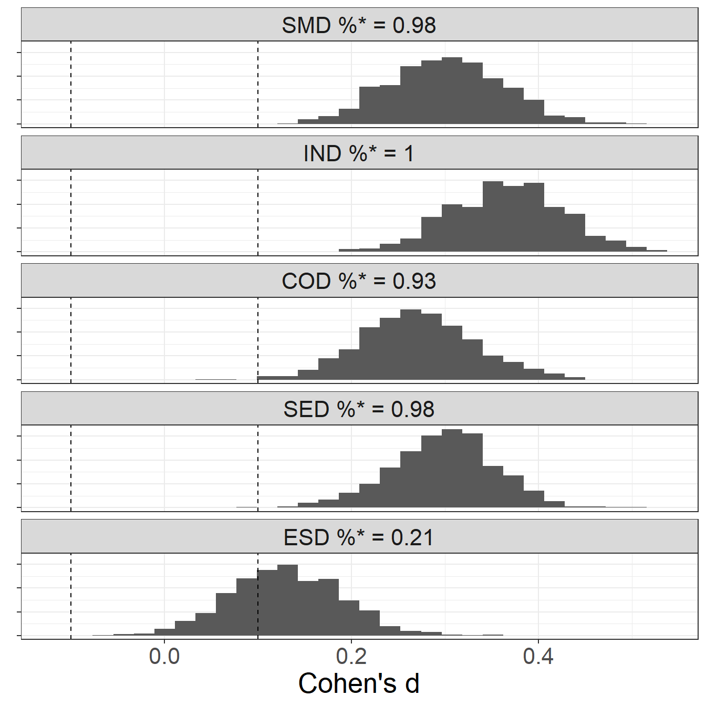

Social, emotional, and behavioral skills in students with specific learning disabilities
…and beyond
Tommaso Feraco
11/02/2025
Background
Specific learning disabilities (SLD)
Non-cognitive aspects of SLD
Non-cognitive aspects of SLD
Are there students’ characteristics that may sustain them all?
Social, emotional, and behavioral (soft) skills
These represent the abilities to establish and maintain social relationships, regulate emotions, and effectively manage behaviors toward goals and learning and mainly fall into five areas11,12:
- Self-management skills
- Social engagement skills
- Cooperation skills
- Innovation skills
- Emotional resilience skills

SEB skills and SLDs: bridging strengths and weaknesses
- Individuals from atypical populations might particularly benefit from these skills to face their life challenges and adapt to their distinctive characteristics13–15
- Students with SLDs may rely more on non-learning skills to face their daily challenges at school
- They could also try to develop them more to succeed in scholastic and non-scholastic contexts
- Thus, interventions that promote skills development and focus on individual strengths can lead to more comprehensive outcomes for students with SLD
- But there is scarce and unstructured research on the topic, adopting varying frameworks and measurements3,16–18
Study 1 

 & Study 2
& Study 2 


 & Study 2
& Study 2 
Feraco et al. (2025), Learning and Individual Differences.
Aims & hypotheses
AIMS & HYPOTHESES
- Aim 1: Identify the SEB profile of SLDs students:
- Aim 2: Test the differential impact of SEB skills
- H2.1: SEB skills predict academic achievement more in students with SLDs
- H2.2: SEB skills predict non-academic outcomes similarly in the two populations23.
AIMS & HYPOTHESES24
- Aim 1: Replicate mean-level differences results:
- H1.1: Lower self-management skills
- H1.2: Lower social engagement and slightly lower cooperation skills
- H1.3: Similar emotional resilience skills
- H1.4: Lower innovation skills
- Aim 2: Replicate interaction effects
- H2.1: SEB skills predict academic achievement more in students without SLDs
- H2.2: SEB skills predict non-academic outcomes similarly in the two populations
Participants & materials
STUDY 1 Participants
- 2965 participants
- 359 with SLDs (169 females)
- 2606 without SLDs (1420 females)
Materials
- SEB skills: BESSI-19225 (Italian version)
- Life satisfaction scale26
- Academic achievement: average grades in Italian and Math
STUDY 2 Participants
- 5075 (valid) participants
- 243 with SLDs (112 females)
- 4832 without SLDs (2649 females)
Materials
- SEB skills: BESSI-4525 (Italian version)
- SRL factors: AMOS27
- Peer relationships28
- Life satisfaction scale26
- Academic achievement: average grades
Responses where screened for careless responding using multiple detection methods. MG-CFA were conducted before testing group differences. These showed that the latent constructs are similarly mapped by the BESSI in the two groups.SEB profile
Mean-level group differences
STUDY 1: Total sample
STUDY 2: Total sample
Results were also replicated on 10,000 matched samples, confirming the general effect.Meta-analytical summary
INCLUDING: a similar third study in University students.
- Study 3 (under review)
- 752 participants (SLD: 125)
- Wider scope but here only group differences are presented
- 752 participants (SLD: 125)
SEB ‘use’
Interaction effects (Study 1)
Interaction effects (replication)
Conclusions & Discussions
SEB profile
Students with SLDs consistently report lower (perceived) SEB skills
- Stigma, learning failures and difficulties may impact students’ perceived abilities beyond the school context21,24
- Failing to acknowledge these differences could limit our comprehension of SLDs and have long-term consequences for students with SLDs
- Future studies should tackle this question and eventually expand the analyses to specific kind of learning disabilities
- In general, the results highlight the importance of extending the comprehension of non-cognitive factors in SLDs.
SEB ‘use’
Students with SLDs appear to use such skills inefficiently for school-related success, but they show similar correlations with general and peer relationships satisaction
But do people (and students) want to change their skills?
A brief dive into volitional change goals
Three international preregistered experimental studies (and a grant from EAPP) on traits and skills change goals 


- AIMS: Explore students’ skills change goals and associated beliefs and compare them to traits
- METHOD: Experimental manipulation of skills and traits definition and items
- SAMPLES:
- Study 1: 126 US and 139 Italian university students [under review].
- Study 2: 200+ Italian university students [ongoing].
- Study 3: 700 High school students, parents and teachers [just started]
- Grant:
- Study 4: 450 Italian, German, and Mexican participants
- Study 5: 390 Italian, German, and Mexican


Future directions
- Continue with skills change goals research (EAPP grant just won)
- Continue working on SEB skills measurement
- Start planning and conducting skills interventions and volitional change interventions
- And much more (including another grant on Geographical Psychology)

References
1.
Association, A. P. Diagnostic and Statistical Manual of Mental Disorders (DSM-5-TR). (American Psychiatric Association, 2022).
2.
Deshler, D. D. Adolescents with learning disabilities: Unique challenges and reasons for hope. Learning Disability Quarterly 28, 122–124 (2005).
3.
Casali, N. et al. Academic Achievement and Satisfaction Among University Students With Specific Learning Disabilities: The Roles of Soft Skills and Study-Related Factors. Journal of Learning Disabilities 00222194221150786 (2023) doi:10.1177/00222194221150786.
4.
Kreider, C. M., Medina, S. & Slamka, M. R. Strategies for Coping with Time-Related and Productivity Challenges of Young People with Learning Disabilities and Attention-Deficit/Hyperactivity Disorder. Children 6, 28 (2019).
5.
Tabassam, W. & Grainger, J. Self-Concept, Attributional Style and Self-Efficacy Beliefs of Students with Learning Disabilities with and without Attention Deficit Hyperactivity Disorder. Learning Disability Quarterly 25, 141–151 (2002).
6.
Mortimore, T. & Crozier, W. R. Dyslexia and difficulties with study skills in higher education. Studies in Higher Education 31, 235–251 (2006).
7.
8.
Pellegrino, J. W. & Hilton, M. L. Education for Life and Work: Developing Transferable Knowledge and Skills in the 21st Century. (National Academies Press, 2012).
9.
Commission, E. A New Skills Agenda for Europe. (2016).
10.
Abrahams, L. et al. Social-emotional skill assessment in children and adolescents: Advances and challenges in personality, clinical, and educational contexts. Psychological Assessment 31, 460–473 (2019).
11.
Soto, C. J., Napolitano, C. M. & Roberts, B. W. Taking Skills Seriously: Toward an Integrative Model and Agenda for Social, Emotional, and Behavioral Skills. Current Directions in Psychological Science 30, 26–33 (2021).
12.
Napolitano, C. M., Sewell, M. N., Yoon, H. J., Soto, C. J. & Roberts, Brent. W. Social, Emotional, and Behavioral Skills: An Integrative Model of the Skills Associated With Success During Adolescence and Across the Life Span. Frontiers in Education 6, (2021).
13.
Pellegrino, G. et al. Universal and Specific Services for University Students with Specific Learning Disabilities: The Relation to Study Approach, Academic Achievement, and Satisfaction. Learning Disabilities Research & Practice (2023) doi:10.1111/ldrp.12323.
14.
Casali, N. & Meneghetti, C. Soft Skills and Study-Related Factors: Direct and Indirect Associations with Academic Achievement and General Distress in University Students. Education Sciences 13, 612 (2023).
15.
Black, M. H. et al. Resilience in the face of neurodivergence: A scoping review of resilience and factors promoting positive outcomes. Clinical Psychology Review 113, 102487 (2024).
16.
Umucu, E. et al. Character Strengths Across Disabilities: An International Exploratory Study and Implications for Positive Psychiatry and Psychology. Frontiers in Psychiatry 13, (2022).
17.
Majeed, N. M., Hartanto, A. & Tan, J. J. X. Developmental dyslexia and creativity: A meta-analysis. Dyslexia 27, 187–203 (2021).
18.
Lombardi, A. R., Kowitt, J. S. & Staples, F. E. Correlates of Critical Thinking and College and Career Readiness for Students With and Without Disabilities. Career Development and Transition for Exceptional Individuals 38, 142–151 (2015).
19.
MacCullagh, L., Bosanquet, A. & Badcock, N. A. University students with dyslexia: A qualitative exploratory study of learning practices, challenges and strategies. Dyslexia 23, 3–23 (2017).
20.
Cavioni, V., Grazzani, I. & Ornaghi, V. Social and emotional learning for children with learning disability: Implications for inclusion. International Journal of Emotional Education 9, 100–109 (2017).
21.
Ghisi, M., Bottesi, G., Re, A. M., Cerea, S. & Mammarella, I. C. Socioemotional features and resilience in italian university students with and without dyslexia. Frontiers in psychology 7, 478 (2016).
22.
Erbeli, F., Peng, P. & Rice, M. No Evidence of Creative Benefit Accompanying Dyslexia: A Meta-Analysis. Journal of Learning Disabilities 55, 242–253 (2022).
23.
Walter, O. & Hazan-Liran, B. Mediating role of psychological capital in relations between social support and subjective wellbeing among students with learning disabilities and attention deficit hyperactivity disorder. European Journal of Special Needs Education 37, 1055–1067 (2022).
24.
Feraco, T., Pellegrino, G., Casali, N., Carretti, B. & Meneghetti, C. Social, emotional, and behavioral skills in students with or without specific learning disabilities. Learning and Individual Differences 117, 102581 (2025).
25.
Feraco, T. et al. The Italian Behavioral, Emotional, and Social Skills Inventory (BESSI-I). Journal of Personality Assessment 0, 1–15 (2024).
26.
Di Fabio, A. & Gori, A. Measuring adolescent life satisfaction: Psychometric properties of the satisfaction with life scale in a sample of Italian adolescents and young adults. Journal of Psychoeducational Assessment 34, 501–506 (2016).
27.
De Beni, R. et al. Test AMOS - Abilità e Motivazione Allo Studio: Prove Di Valutazione e Orientamento Per La Scuola Secondaria Di Secondo Grado e l’università: Nuova Edizione. (Edizioni Centro Studi Erickson, 2014).
28.
Brock, D. M., Sarason, I. G., Sanghvi, H. & Gurung, R. A. R. The Perceived Acceptance Scale: Development and Validation. Journal of Social and Personal Relationships 15, 5–21 (1998).
Mean-level differences, matched samples
STUDY 1, matched samples
STUDY 2, matched samples

11/02/2025, SEB skills in students with specific learning disabilities
Social, emotional, and behavioral (soft) skills
Many national and international organizations and institutions think so7–10 and label these as “soft skills”, “socio-emotional skills”, “life skills” …
Useful for